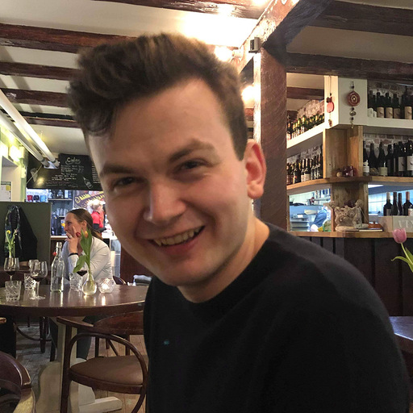

- Mail: oskar.tegby@it.uu.se and oskar.tegby@math.uu.se
- Affiliation: The Department of Mathematics and the Department of Information Technology, Uppsala University, Sweden
- Office: C8:222b, BMC, Uppsala
- Current Research: The Alexandria Chemistry Toolkit, and implementing Tucker tensors a Vlasov-Maxwell solver.
- Earlier Research: The parallel implementation of an implicit Runge-Kutta method for the heat equation in deal.II using C++.
- Current Teaching: Function Theory for Engineers and Scientific Computing I (60 hours)
- Coming Teaching: High Performance Programming (60 hours) and Scientific Computing II (60 hours)
- Earlier Teaching: Spring 2020: Computer Programming I (60 hours) and Computer Programming II (60 hours)
- Fall 2020: Scientific Computing I (60 hours), Computer Architecture (120 hours), and Information Technology: Opportunities and Challenges (60 hours)
- Spring 2021: Artificial Intelligence (120 hours), Scientific Computing II (60 hours), Computer Programming II (60 hours), and Programming (30 hours)
- Summer 2021: Information Technology: Opporunities and Challenges (120 hours)
- Fall 2021: Scientific Computing I (60 hours), Scientific Computing II (60 hours), and Mathematics Basic Course